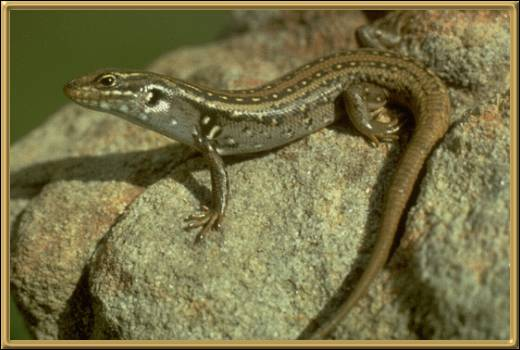

These skinks are found throughout the lower eastern part
of Australia, including Tasmania. They live in complex burrow systems and their
total size, including their tail is 31.5 cm (approx. 12.5 inches).
Photographer: Unknown
This is the last in the series of reptiles. Please choose 'home' or 'back' to choose another area to view.